ClickTime Sidebar
Summary: Creating a new mode of navigation and information-intake for our users on the existing ClickTime web-application, while also paving the way for new potential updates to the product's outdated UI.
Role: Product design, wireframing, initial prototyping
Tools: Adobe Illustrator, MarvelApp
Time: 3 months
Problem: Users were generally unhappy with the clunky, unintuitive feel of the current ClickTime web-application. They disliked how long it took to reach certain tools and information as well as the outdated UI.
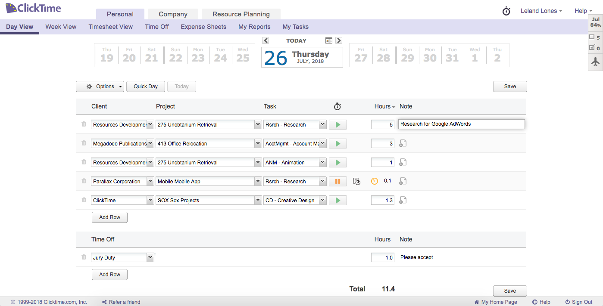Solution: Our team of interns prototyped a ClickTime sidebar that focused both on both providing ease of navigation and better information-intake. Additionally, in utilizing ClickTime's new, yet mostly unused, style guide, we aimed to catalyze a change in the application's UI that future iterations would mimic.
Ideation: Initially, our prompt was simply to implement any change to ClickTime that we could both complete within three months and as well as justify to the company. Beginning the ideation process, we utilized old customer feedback from the past six months to pinpoint various pain points users had with the current ClickTime web application. We acknowledged that this was less ideal than conducting our own surveys, but given the time constraints as well as the open-endedness of the prompt, we decided that older customer feedback could still generate valuable insights because the ClickTime application itself had undergone few changes since the survey's release.
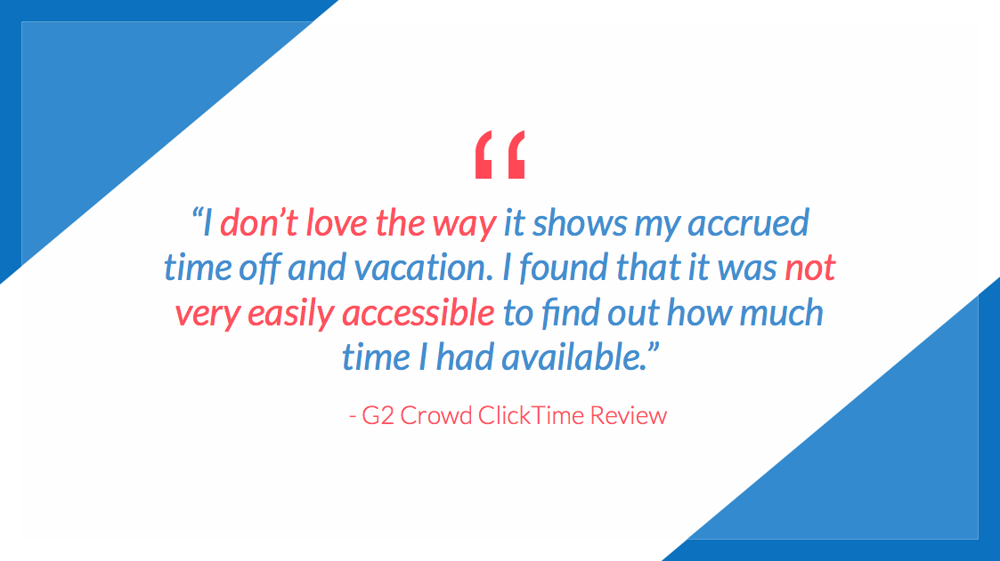 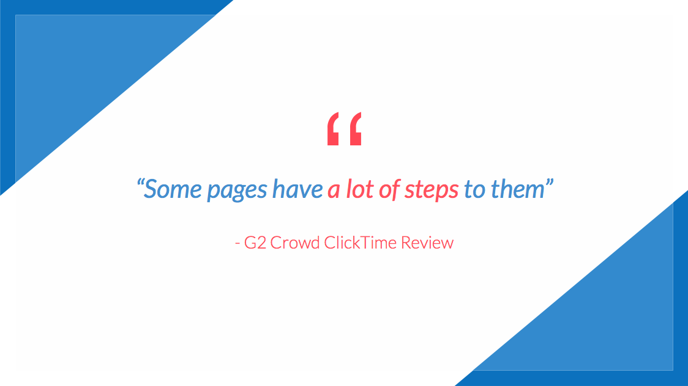 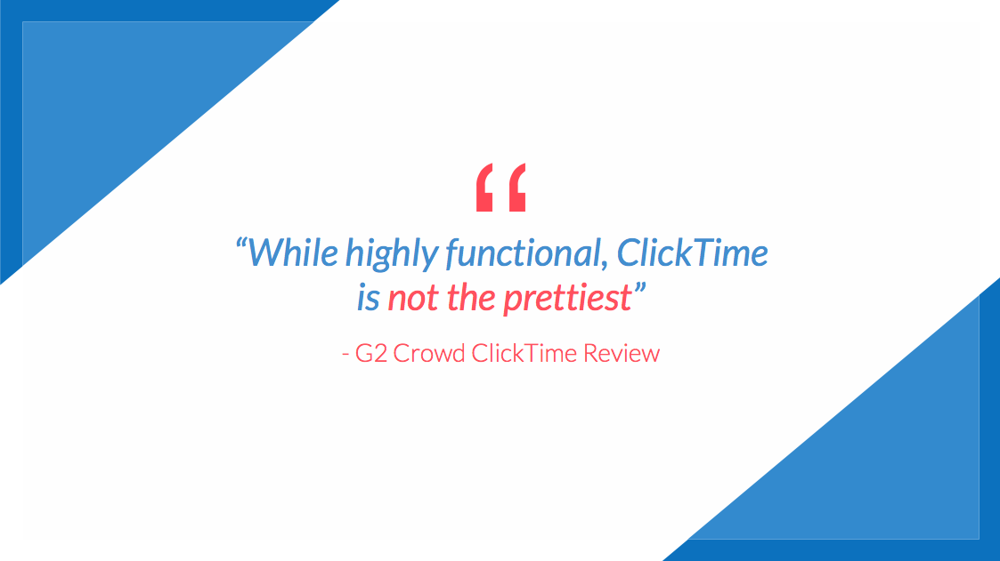Based on this customer feedback, we pinpointed three main problems of ClickTime we wanted to address: the lack of relevant information with the main interface, the inability to easily navigate between necessary pages, and ClickTime's outdated UI. Thus, we set out to find how other products addressed these issues, referencing other enterprise-level tools such as Slack and BambooHR. We discovered that these tools all had one function in common that also addressed our issues: a sidebar that provided quick information and catalyzed navigation on the product's main interface, all while seamlessly integrating with the rest of the product for a smooth user experience. For example, Slack's sidebar provides information with simple bolding and notification icons while allowing easy navigation through movement between different chats. We took these products into heavy consideration when we began implementing our sidebar.

Implementation: We next focused on designing our sidebar, beginning with some initial sketches. As seen below, our first iterations involved a whole sidebar that could be toggled in and out, much like Slack's, with "widgets:" a timesheet widget, an out-of-office widget, a time-off widget, and an expenses widget. After some initial sketching, we then moved on to creating more visually-pleasing mockups on Adobe Illustrator.
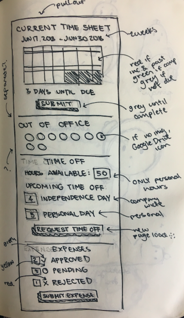 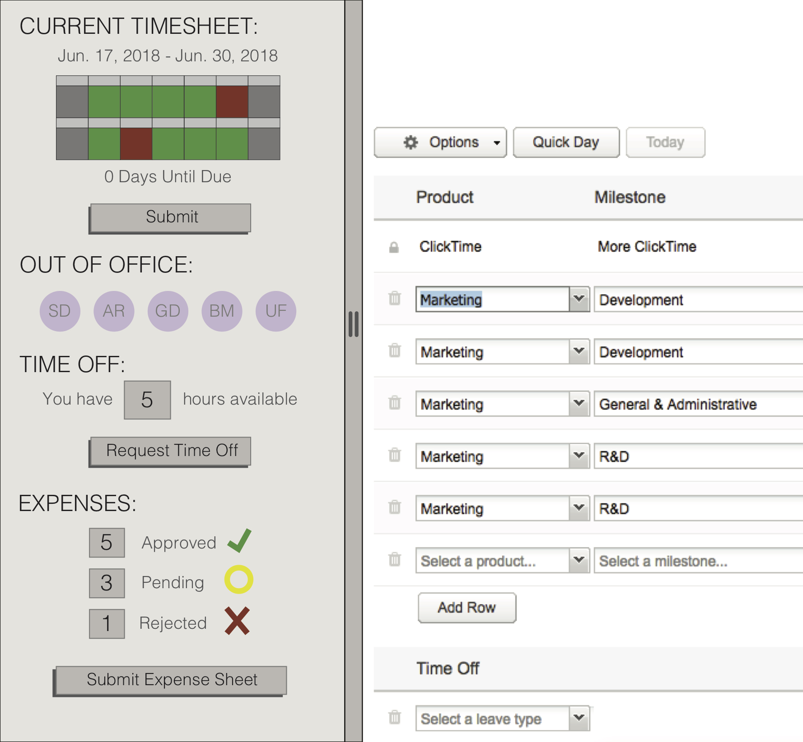We knew we wanted to tackle a timesheet widget because it was one of the few tools in the ClickTime application that general users interacted consistently, yet had numerous flaws (ie. the current UI of ClickTime's timesheet system failed to display the customer's entire timesheet, especially if the user's pay period was more erratic). We also opted for addressing ClickTime's time-off and expenses tools because the information necessary to properly interact these functions was not always readily available (ie. knowing how many personal hours one had or how many expense sheets that had been approved).
One major change we made after initial sketching, though, included forgoing the out-of-office widget for privacy reasons. We replaced it with a stopwatch widget, which at the time was difficult for users to locate and track. We also decided against a whole sidebar that included all widgets when toggled in and out, opting instead for hoverable icons that revealed their corresponding widgets. This would enable the user to only interact with information that was relevant at the time. With these design decisions in mind, we moved on to prototyping our sidebar in MarvelApp.
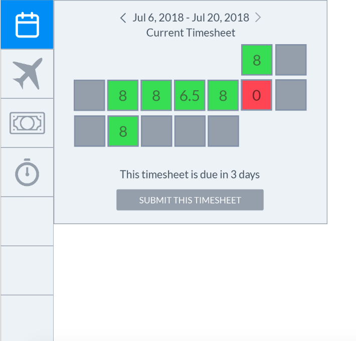 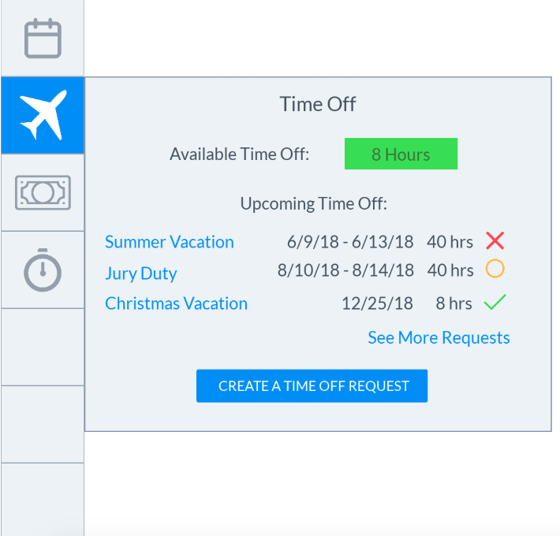 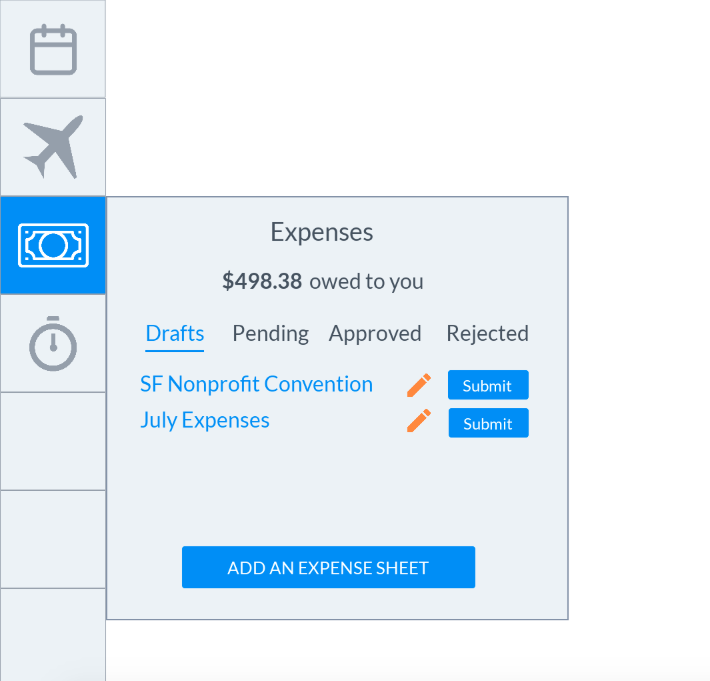 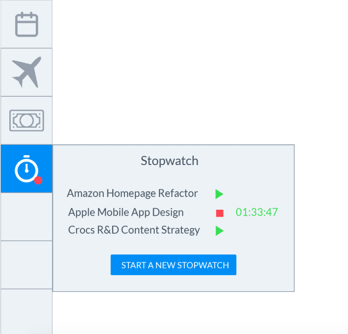Our design was largely influenced by Google's Material Design principles, as these were also the guidelines following ClickTime's new style guide. Using MarvelApp was optimal because it had a quick learning curve and also allowed for cross-collaboration. Thus, our software-engineering interns could easily access designs as well as how a user interacted with certain elements. With the software-engineering interns now caught up to speed, we moved on to integrating the sidebar with the existing ClickTime web application.
Upon integration, we encountered numerous edge cases like abnormal pay periods, non-personal time-off hours, and more. We efficiently addressed these by first mocking up specific edge cases on MarvelApp before sending them to our software-engineering interns. Additionally, we created a "Sidebar Spec" document that we continually updated with each change to provide quick, written documentation as well. In this way, we rectified communication issues between one another with both visual and written specifications. Consequently, integration of the sidebar with the web application became a process that occurred congruently with iterating on our initial design, putting us ahead of schedule.
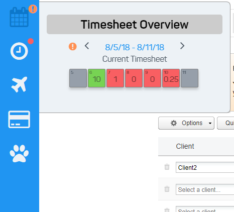
Conclusion: After completing a working prototype of our sidebar, we presented it to the entire ClickTime office, including remote workers. In our presentation, we not only provided a complete demo of the sidebar, but also justified the validity of our final product through market research, claiming that it addressed our previously-defined problems through methods like reducing click-count to reach certain tools. Most notably, integration of our sidebar with the current web-application had deep implications because it addressed a general avoidance to update ClickTime's UI for fear of having to make signifant changes to current infrastructure. Furthermore, we provided a potential schedule for release of the sidebar to general users as well as hypothetical additions like implementing notifications and new widgets.
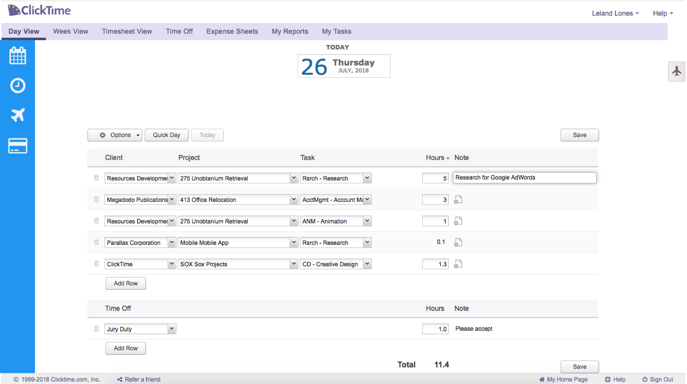Ultimately, our presentation, according to CEO of Mann Consulting Harold Mann, was "one of the most well-thought-out, well-put-together intern projects of ClickTime." As of now, the ClickTime sidebar has been adopted by the current employees of ClickTime and is under code review.
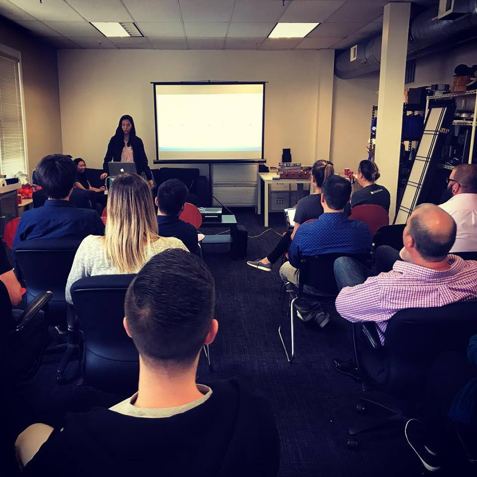